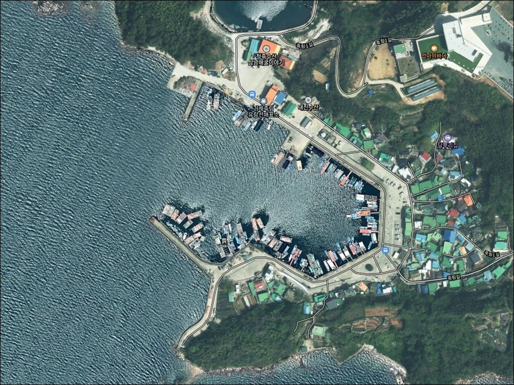
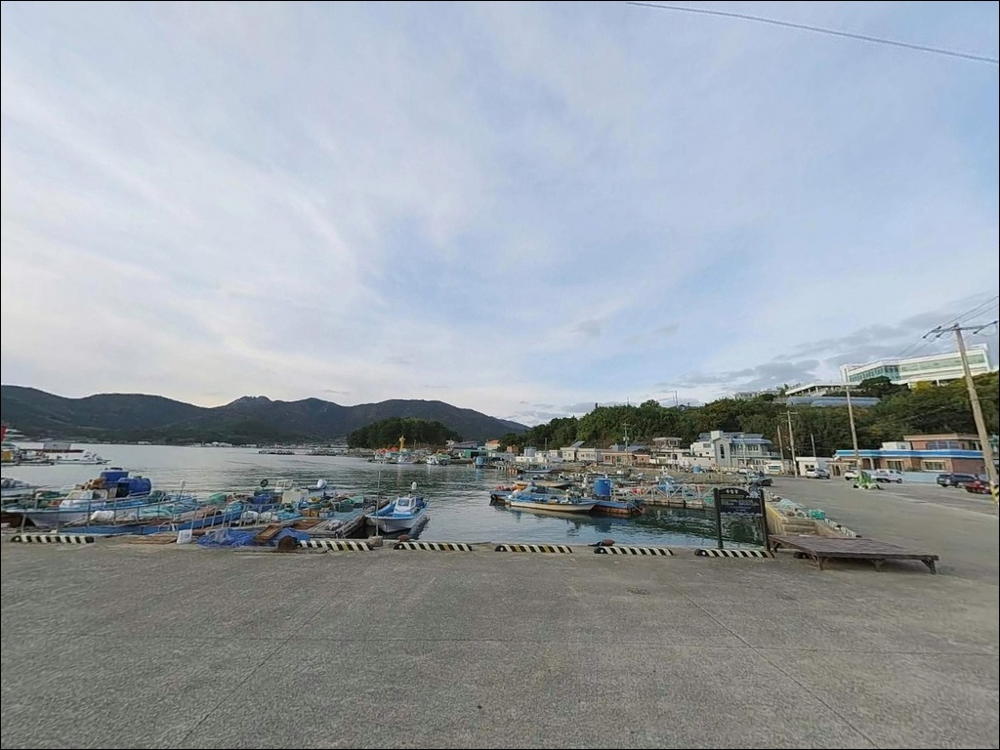
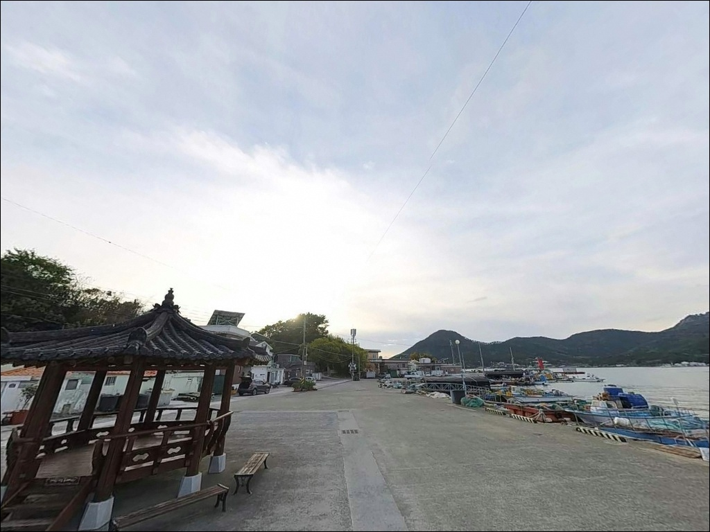
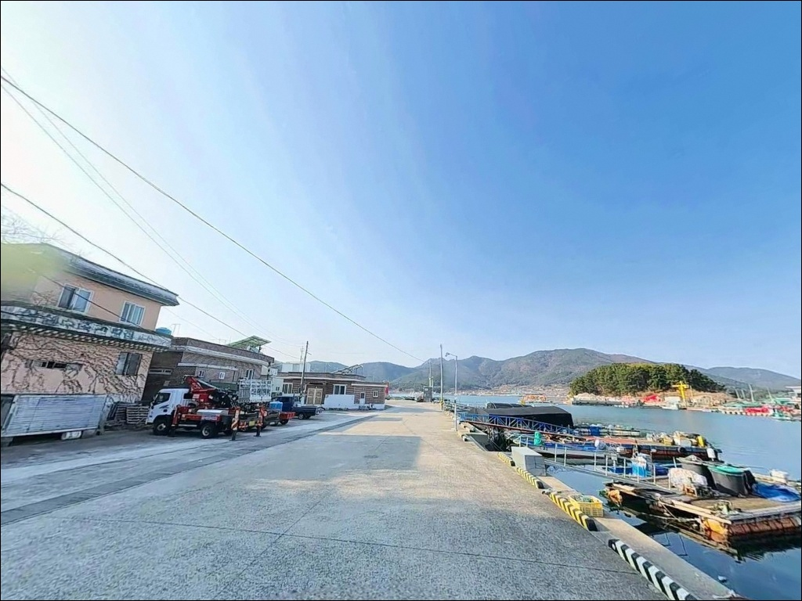
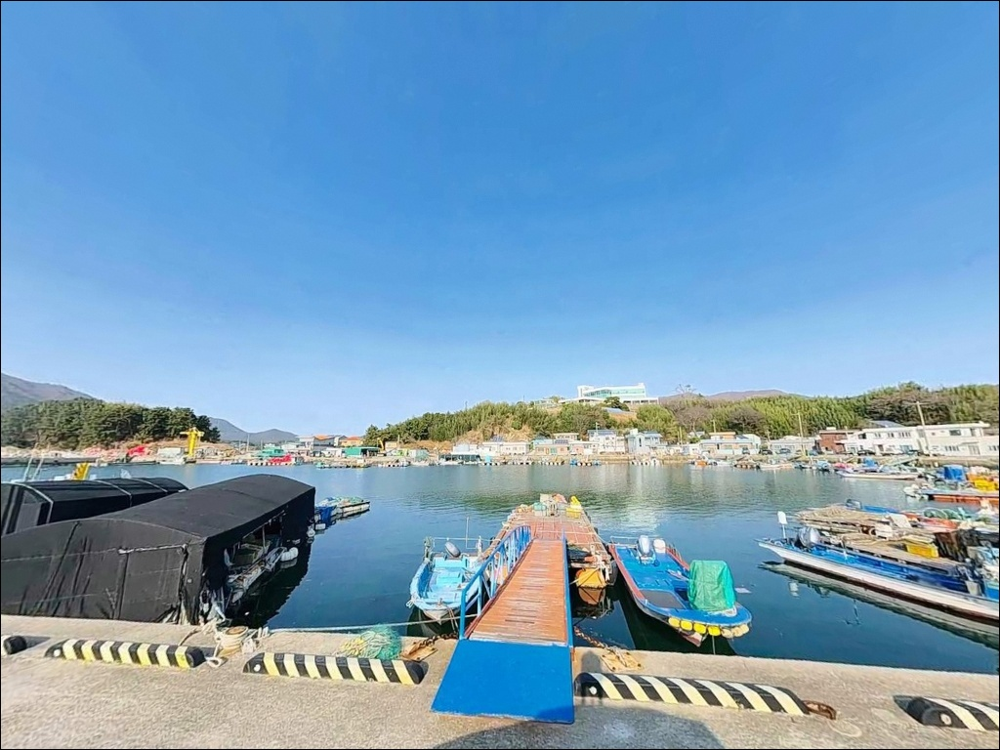
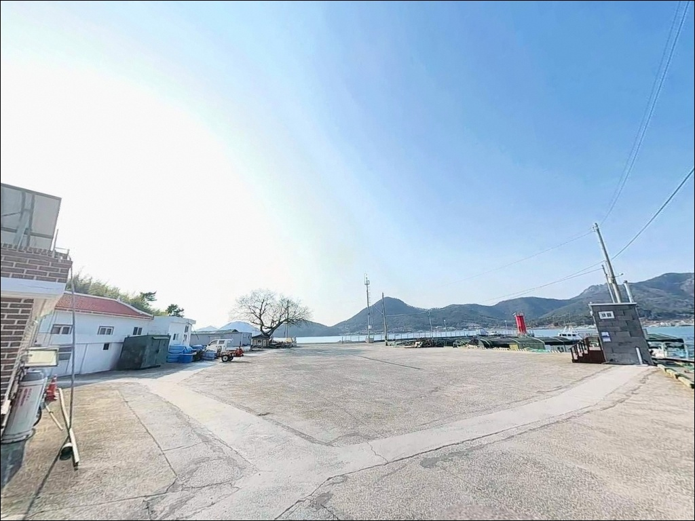
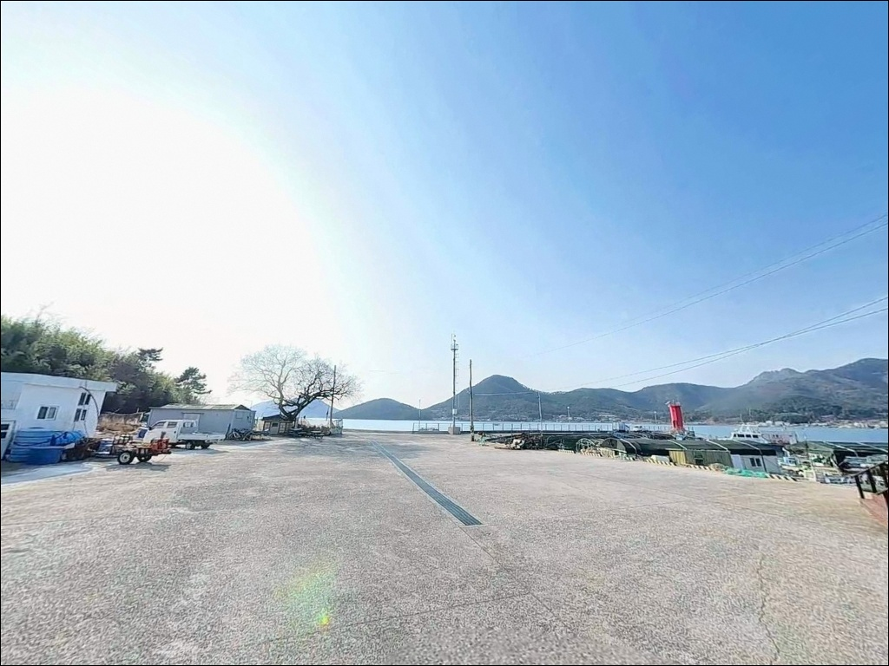
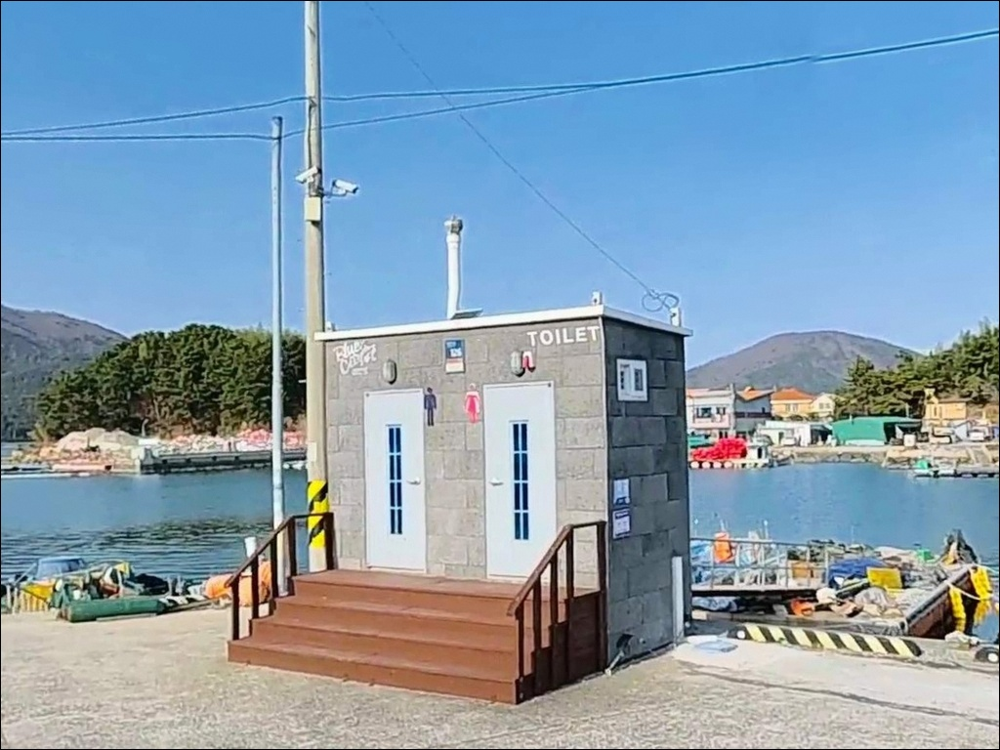
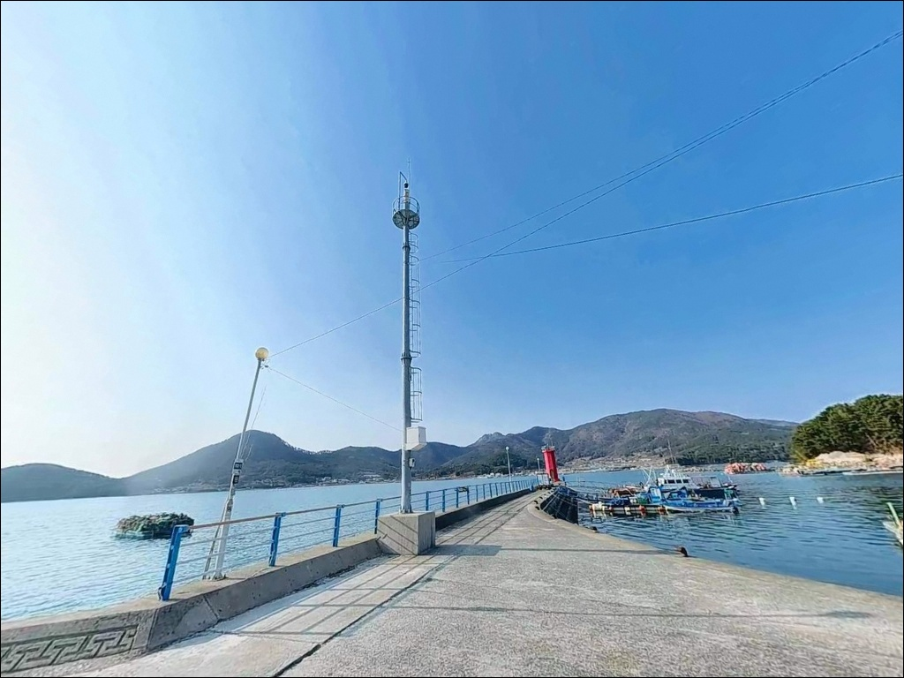

거제 죽림항 방파제, 창조 낙조 조류 타이밍 모르면 외항 수심 5m 자리도 빈손
이 페이지에는 광고(제휴 링크 포함)가 있으며, 광고 링크를 통해 구매하면 운영자가 판매 수익 또는 수수료를 받을 수 있습니다. 포인트 사진: 카카오맵 스카이뷰·로드뷰. 이 페이지의 지도·사진 이미지는 카카오맵의 실제 서비스 이미지와 다를 수 있습니다.


포인트 안내
죽림항
경남 거제시 거제면 오수리 1097-5
거제만 내만이라 잔잔할 것이라 보고 들어갔다가
창조·낙조 흐름이 끊긴 정조 시간대에 자리를 잡으면
방파제 끝단에서도 채비가 바닥에 가라앉기만 합니다.
죽림항은 내만 구조라 파도 부담은 적지만,
조류가 통하는 타이밍이 조과의 전부를 결정하는
방파제 포인트입니다.
경남 거제시 거제면 오수리,
죽림항은 1992년 지방어항으로 지정된
거제만 서쪽의 소형 항구입니다.
방파제 100m, 물양장 190m 규모로
발판이 평탄하고 접근성이 안정적이며,
바로 옆에는 백사장 530m의
죽림해수욕장이 이어져 있습니다.
이 글은
죽림항의 진입 동선, 방파제 구조와 수심,
낚시 방식별 운용 조건, 차박 체류 여건에 집중합니다.
조황 단정이나 특정 어종 보장은
이 글의 범위에 포함되지 않습니다.

1. 진입 동선과 포인트 접근성
죽림항은 거제면 소재지에서
오수길을 따라 포장도로로 직접 진입합니다.
마을 진입로가 정비되어 있어
캠핑카나 카라반도 무리 없이 들어올 수 있으며,
선착장 물양장이 넓어 회차도 용이한 편입니다.
주차는 물양장 인접 공터와
해수욕장 인근 공용 주차장을 활용하는 방식이 일반적입니다.
물양장 공터는 낚시 자리 바로 뒤에 위치해
장비 이동 동선이 짧고,
해수욕장 주차장은 항구에서
약 300m 거리에 있어
공간 여유가 더 큰 편입니다.
어선 접안 구간과 어민 작업 동선을
막지 않는 자리를 먼저 확인하는 것이
기본 진입 절차입니다.
어촌신활력증진사업(2024~2027년)이 진행 중이므로
공사 구간 펜스 여부는 현장에서 확인해야 합니다.

2. 차박 환경과 야간 체류 여건
죽림항 주변은 오수리·죽림마을 소규모 어촌이 형성되어 있으며
민가 밀집도는 높지 않습니다.
해안도로와 항구 일대에 가로등과 항구 조명이 설치되어 있어
야간에 완전한 어둠은 아닌 환경입니다.
밤늦게는 차량 통행이 현저히 줄어
차박 시 비교적 조용한 편입니다.
물양장 인접 공터는 낚시 후 바로 차박으로 연결되는 구조지만
어민 작업 동선과 가까운 단점이 있습니다.
프라이버시를 더 원한다면
죽림해수욕장 쪽 주차 공간이 더 열린 구조입니다.
거제만 너머 산달도와 한산도 불빛이
은은하게 보이는 야경도 이 포인트의 특징입니다.
차박 시에는 어구(그물, 통발) 위에 짐을 두거나
어선 통행로를 막는 자리는 피해야 합니다.
마을 주민들이 환경 관리에 민감한 곳이므로
쓰레기는 전량 수거하고
야간 고성방가를 자제하는 것이 기본 매너입니다.


3. 주변 편의시설 및 인프라 현황
죽림항 인근에는 최근 공중화장실이 설치되어
죽림해수욕장 입구 및 선착장 인근에서
이용할 수 있습니다.
과거에는 화장실이 없어 불편했으나
차박 체류 여건이 크게 개선된 변화입니다.
마을 내 소규모 상점이 있지만 품목이 제한적입니다.
식료품, 미끼, 얼음 등은 진입 전
거제면 소재지의 하나로마트에서
완벽히 구비하고 들어오는 것이
현실적인 준비 방식입니다.
반경 10km권으로 이동하면
거제면 소재지 방면에 편의점, 마트, 병원, 약국이 있어
긴급 상황이나 추가 구매에 대응할 수 있습니다.
응급 시에는 거제종합병원(고현 방면)이
이동 거점이 됩니다.

4. 방문 전 반드시 챙겨야 할 준비사항
죽림항 방문 전에 가장 먼저 확인할 것은
물때입니다.
거제만 내만 구조라 파도는 적지만
창조·낙조가 시작되는 타이밍에
방파제 끝단 조류가 살아나는 구조입니다.
바다타임에서 거제면 기준 물때를 확인하고
조류가 흐르는 타이밍에 맞춰 자리를 잡는 것이
기본 전략입니다.
거제만 남해안 특성상 기상 변화가 빠를 수 있으므로
기상청 해상예보를 출발 전날과 당일 아침
두 차례 확인하는 편이 좋습니다.
내만 구조라도 대조기에는 조류 세기가
달라지므로 기조력도 함께 살펴야 합니다.
어촌신활력증진사업 공사 구간이 포함될 수 있어
현장에서 안전 펜스 설치 여부를 확인하고
진입 동선을 조정해야 합니다.
야간 낚시를 계획한다면
헤드랜턴과 구명조끼는 필수입니다.
방파제 낚시에서 구명조끼 착용은
기본 안전 수칙입니다.

5. 방파제 외항과 내항, 조류 방향에 따라 자리 선택이 달라지는 이유
죽림항은 거제만 내만을 향해 열린 구조로,
100m 방파제가 외해 방향으로 뻗어 있습니다.
내항은 선박 접안 기준 수심 3~5m의 정온 수역이고,
방파제 끝단 외항 방향으로는
수심 5~7m 구간이 형성됩니다.
거제만을 통해 들어오는 조류가
창조·낙조 시 방파제 앞을 통과하며
먹잇감 이동 통로 역할을 합니다.
조류가 흐르는 타이밍에 방파제 끝단 외항 쪽이
원투와 찌낚시 반응이 올라오는 구조입니다.
죽림항 방파제 끝단 외항 쪽은 창조·낙조 타이밍에 조류가 살아나
원투와 찌낚시 반응이 올라오는 구간입니다.
바닥은 펄과 모래, 수중 여가 혼재된 복합 지형입니다.
펄 비율이 높은 구간에서는 밑걸림이 적어
초보자도 원투 운용이 수월합니다.
인근 죽림해수욕장 쪽으로는 사질 해저가 이어져
해변 바다낚시 구간도 형성됩니다.
출조 전 죽림항 일대 최신 조황을
먼저 검색해 보시기 바랍니다.


6. 포인트에 어울리는 낚시 스타일
이 포인트에서 가장 잘 맞는 방식은
방파제 끝단 외항 방향 원투낚시입니다.
펄과 혼합 지형이 많아 밑걸림이 적고
봄철 도다리, 여름 보리멸, 가을 붕장어와 양태를
기대해 볼 수 있는 원투 여건을 갖추고 있습니다.
천평채비와 외줄채비 모두 운용 가능한 구조입니다.
찌낚시와 릴찌낚시도 이 포인트 구조에 잘 맞습니다.
방파제 끝단 꺾임 구간에서 조류를 타며 흘리는 방식이 어울리며,
가을(9~11월)에는 전갱이와 감성돔 활성도가
거제만 전역에서 올라오는 시기입니다.
내만형 방파제 찌낚시에서
감성돔과 볼락을 함께 노릴 수 있는 타이밍입니다.
볼락 라이트게임은 야간 입장에 특히 어울립니다.
방파제 내항 석축 구간 또는
항구 조명 아래에서 소형 지그헤드 채비로
암초 경계선을 천천히 탐색하는 방식이
내만 항구의 볼락 공략에 맞는 구조입니다.
내만 구조라 파도 영향이 제한적인 죽림항은
가족 단위 출조나 초행 낚시인에게도
진입 부담이 적은 방파제 포인트입니다.

7. 대안 포인트와 플랜 B 동선
죽림항 조류가 맞지 않거나
주차 공간이 여의치 않을 때는
실리항(약 2~3km)이 첫 번째 대안입니다.
거제면 동일 구역 내 소규모 항구로
해역 조건이 유사하며
내만형 낚시 접근 방식을 그대로 적용할 수 있습니다.
윗당넘 방파제(약 4km)는
원투와 찌낚시가 안정적으로 운용 가능한
연안형 포인트입니다.
수심이 얕은 편이지만
죽림항과 같은 해역 조건을 공유하는 구간으로
바람이 강할 때 대체로 유효합니다.
고현항(약 4~5km)은
거제시 내에서 방파제 규모와
낚시 인프라가 더 갖춰진 대형 항구입니다.
죽림항에서 첫 출조를 시작한 뒤
조황이 부진하면
고현항을 기점으로 이동하는 동선이
이 권역에서 가장 효율적입니다.

죽림항은
준비한 만큼 돌아오는 거제만 내만 포인트입니다
원투낚시나 찌낚시를 즐기는 낚시인이라면
죽림항의 방파제 구조와 수심 조건은
잘 맞는 환경입니다.
발판이 평탄하고 진입이 안정적이며
파도 부담이 적어
다양한 낚시 방식을 실험해 보기 좋은 포인트입니다.
다만 조류 타이밍을 계산하지 않고
정조 시간대에 자리를 잡으면
외항 끝단에서도 채비만 바닥에 가라앉습니다.
물때 확인, 자급 준비, 공사 구간 현장 점검,
이 세 가지를 갖추고 간다면
거제만 내만에서 기억에 남는 출조가 될 수 있는 곳입니다.
죽림해수욕장 바로 옆에 차를 세우고
방파제에서 낚시를 마친 뒤
거제만 야경을 바라보며 하룻밤 머무는 여정이라면,
낚시와 차박을 자연스럽게 이어가기 좋은
조용한 포인트입니다.